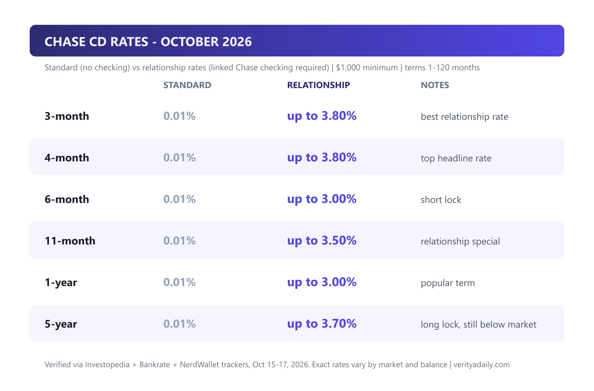
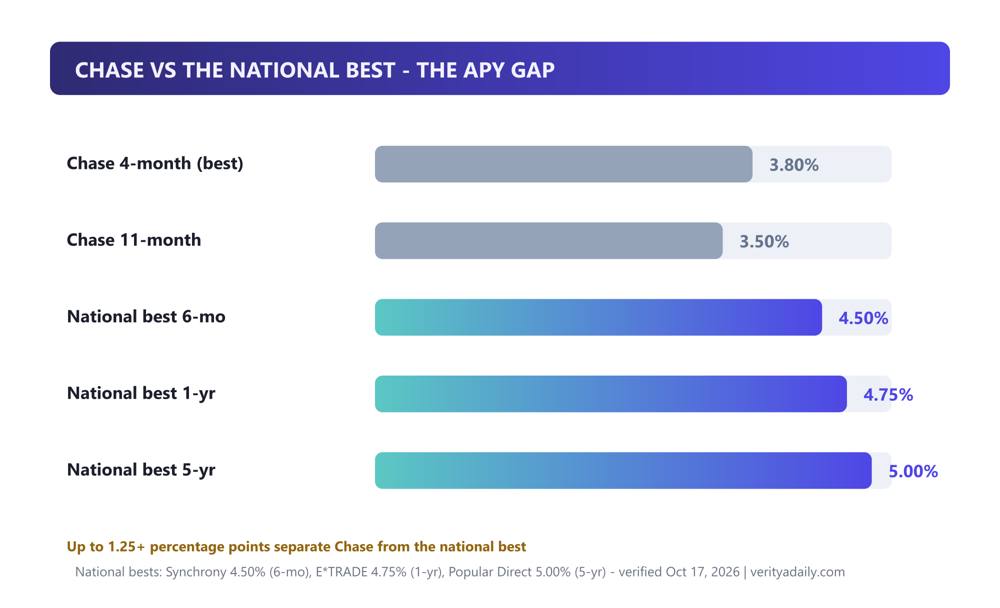
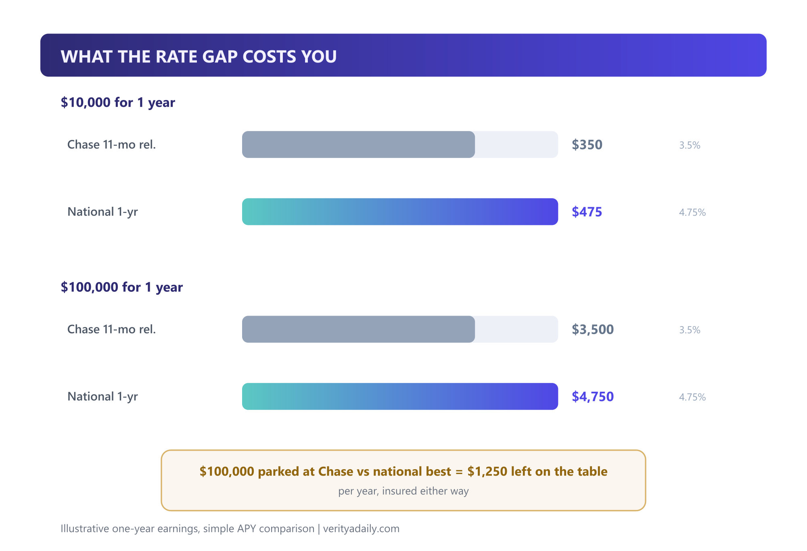
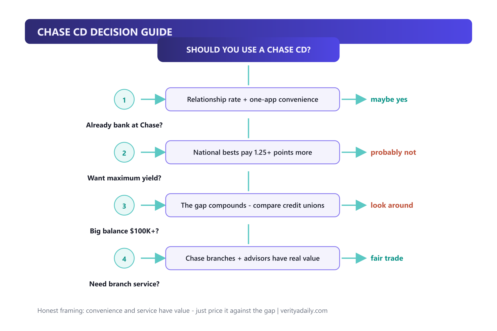

Chase CD Rates Today (October 2026): Honest Review vs the National Best
Chase CD rates today range from 0.01% APY (standard, no checking account) up to 3.80% APY (relationship rates on short terms with a linked Chase checking account), with a $1,000 minimum deposit and terms from 1 to 120 months. That headline rate trails the national best of 5.00% APY by more than a full percentage point - on a $100,000 deposit, that gap costs about $1,250 a year. Here's the full table, the math, and when Chase still makes sense.
Quick answer
Chase CD rates (Oct 17, 2026): standard APY 0.01%; relationship rates 0.02%-3.80% APY (best: 3.80% on a 4-month CD, 3.50% on 11-month, 3.70% top 5-year). Minimum $1,000. National best for comparison: 5.00% APY (Popular Direct 5-year, Nuvision 7-month). Relationship rates need a linked Chase personal checking account.
In this guide
- Chase CD rates table (standard vs relationship)
- Why are Chase CD rates so low?
- Chase vs the national best: the gap in dollars
- Early withdrawal penalties
- Relationship rates and CD promotions
- Chase vs Capital One, Ally and credit unions
- Who should still buy a Chase CD
- How to open one and lock the rate
- FAQ
Key takeaways
- Standard Chase CD APY is 0.01% - without a linked checking account, a Chase CD is essentially a parking spot.
- Relationship rates reach 3.80% APY (4-month CD) and 3.50% (11-month) - the real Chase offer, checking required.
- The national best pays 5.00% APY - a gap of up to 1.25+ points that equals $1,250/year on $100K.
- Minimum is $1,000; terms run 1 to 120 months; early withdrawal penalties are steep (up to 365 days of interest).
- Verdict: good for Chase loyalists valuing convenience; rate-seekers should compare our best CD rates today tracker first.
Chase CD rates table (standard vs relationship)
Chase hides its real rates behind a zip-code wall and a relationship gate - here's the verified picture as of October 17, 2026, cross-checked against Investopedia, Bankrate and NerdWallet trackers:

| Term | Standard APY | Relationship APY | Notes |
|---|---|---|---|
| 3-month | 0.01% | up to 3.80% | best relationship rate |
| 4-month | 0.01% | up to 3.80% | top headline rate |
| 6-month | 0.01% | up to 3.00% | short lock |
| 11-month | 0.01% | up to 3.50% | relationship special |
| 1-year | 0.01% | up to 3.00% | popular term |
| 5-year | 0.01% | up to 3.70% | long lock, below market |
Three quirks worth knowing: rates vary by market (your zip code gets its own table); balances above $10,000/$100,000 can unlock tier bumps on some terms; and the 120-month maximum is unusual - useful only for genuinely decade-long money. Always pull your local quote from Chase's CD page before funding.
Why are Chase CD rates so low?
It's the most-searched question about Chase CDs, and the answer is strategy, not stinginess. Chase prices deposits on relationship depth, not rate competition. The 0.01% standard rate is effectively a toll: it exists to push you toward opening a linked checking account, which makes you a "relationship customer" eligible for the real table above.
The economics: Chase doesn't need to chase deposits at 5% because its deposit base comes from checking account stickiness, branch networks, and the JPMorgan ecosystem. Banks that lack branches - Popular Direct, Nuvision, E*TRADE - buy deposits with yield. Chase sells convenience instead. Neither model is wrong; they're just selling different products, and you should price which one you're actually buying.
Chase vs the national best: the gap in dollars

Abstract percentages hide the cost, so here's the concrete version:

- $10,000 for one year: Chase 11-month relationship (3.50%) earns ~$350 vs the national 1-year best (4.75%) at ~$475 - a $125 difference.
- $100,000 for one year: the same comparison yields ~$3,500 vs ~$4,750 - $1,250 left on the table annually.
- Five years at $100K: Chase's 3.70% vs 5.00% compounds to roughly a $7,000+ difference over the term.
Both paths are FDIC-insured to $250,000 - safety is identical. You're choosing between convenience and compound interest.
Early withdrawal penalties
Chase's early withdrawal penalties scale with term length (simple interest, taken from earned interest first, then principal):
| Original term | Penalty |
|---|---|
| 90 days to 12 months | 90 days of interest |
| Over 12 months, under 24 months | 180 days of interest |
| 24 months and longer | up to 365 days of interest |
Break a 6-month CD after one month and the penalty (90 days of interest) exceeds everything earned - you'd walk away with less than you deposited. If your timeline is uncertain, a no-penalty CD at an online bank, or our high-yield savings alternative, beats gambling on a fixed term.
Relationship rates and CD promotions
Two levers improve Chase's offer: first, the relationship rate - any linked Chase personal checking account unlocks the upper tier, and Chase Sapphire/Private Client relationships can add tier bumps on larger balances. Second, Chase periodically runs relationship CD specials (historically the 4-month and 11-month terms) that beat its standard table - these appear in your local quote but aren't advertised nationally. Searchers looking for a "chase cd promo" should know: there's no public coupon code system; the promo is the relationship tier, and it's priced into the table above.
Chase vs Capital One, Ally and credit unions

| Provider | Best CD APY | Minimum | Standout |
|---|---|---|---|
| Chase | 3.80% (relationship) | $1,000 | Branches, one-app ecosystem |
| Capital One | 4.40% (11-month) | $0 | No minimum, no fees |
| Ally Bank | 4.00% (high-yield) | $0 | No-penalty + raise-your-rate options |
| Nuvision CU | 5.00% (7-month) | $1,000 | NCUA-insured credit union |
| Popular Direct | 5.00% (5-year) | $10,000 | Pure yield play |
The pattern from our national CD tracker holds here: branch giants price convenience into their CDs. Capital One is the interesting middle case - national scale, but online-first pricing that beats Chase by 0.6 points with no minimum.
Who should still buy a Chase CD
Chase CDs earn their place in four situations: (1) you already run your checking through Chase and value one-app simplicity; (2) you want face-to-face service for a large CD - branches have real value for $100K+ nervous first-timers; (3) you're laddering small amounts and the convenience outweighs 100-ish dollars of annual gap; (4) a local market promo happens to match national bests. Everyone else - especially rate-driven savers with four-figure-plus balances - should comparison-shop the national table first, then decide if Chase's ecosystem is worth the delta to you.
How to open one and lock the rate
- Pull your local quote from Chase's CD page (rates vary by zip) and confirm the relationship tier shows if you have checking.
- Choose the term deliberately - the 4-month and 11-month relationship specials carry the best value; long terms deepen the gap to national bests.
- Fund within the window - Chase applies the quoted rate at account opening; new money generally required (no rate-matching of rival banks).
- Set the maturity instruction - auto-renew is the default at whatever rate is in effect at maturity; set a reminder 7-10 days before the grace window closes if you plan to move the money.
FAQ
What happens if I withdraw early from a Chase CD?
Penalties scale with term: 90 days of simple interest for terms under a year, 180 days for over 12 months, and up to 365 days for 24-month-plus CDs. Early breaks on short CDs can exceed earned interest and dip into principal.
Why are Chase CD rates so low today?
Chase prices deposits on relationship depth rather than rate competition: 0.01% standard pushes customers toward linked checking, which unlocks relationship rates up to 3.80%. Branch networks and ecosystem stickiness, not yield, are Chase's deposit strategy.
What is the best interest rate for a Chase savings account?
About 3.25% APY on premium savings with $25,000+ and relationship tiering; standard savings sits near 0.01%. Online high-yield savings pays 3.10-4.00% with no relationship strings - see our high-yield savings explainer for the comparison.
What is a good 5 year CD rate right now?
The national best is 5.00% APY (Popular Direct, $10,000 minimum) as of October 2026. Chase's best 5-year relationship rate tops out around 3.70% - about 1.3 points below. A good rate today means mid-4s or better.
Are Chase CDs good?
For Chase loyalists who qualify for relationship rates and value branch service: reasonable. For rate-seekers: the 3.80% headline trails the 5.00% national best by 1.25+ points - $1,250/year on $100K. Compare our best CD rates today tracker before committing.
📚 Sources & Citations (6)
- Investopedia - Chase CD Rates: October 2026 (standard 0.01%, relationship 0.02%-3.80%)
- Bankrate - Chase CD Interest Rates (term-by-term verification)
- NerdWallet - Chase CD Rates 2026: Low Across Terms (3.80% 4-month, 3.50% 11-month)
- Chase - Certificate of Deposit Account (official rates page, APYs effective 10/15/2026)
- Bankrate - Best CD Rates of October 2026 (national best comparison)
- CNBC Select - Best CD Rates of October 2026 (Nuvision 5.00% reference)
Rate update note: this review is a living tracker - Chase adjusts rates by market and date (last verified October 17, 2026). We refresh the table and comparisons as offers move. Not financial advice; see our full disclaimer.
Keep exploring: see what the money could earn instead in our best CD rates today tracker, understand the locked-vs-liquid trade in high-yield savings explained, or plan next year's reading with the best free budgeting apps.